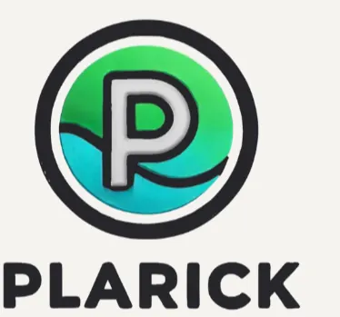
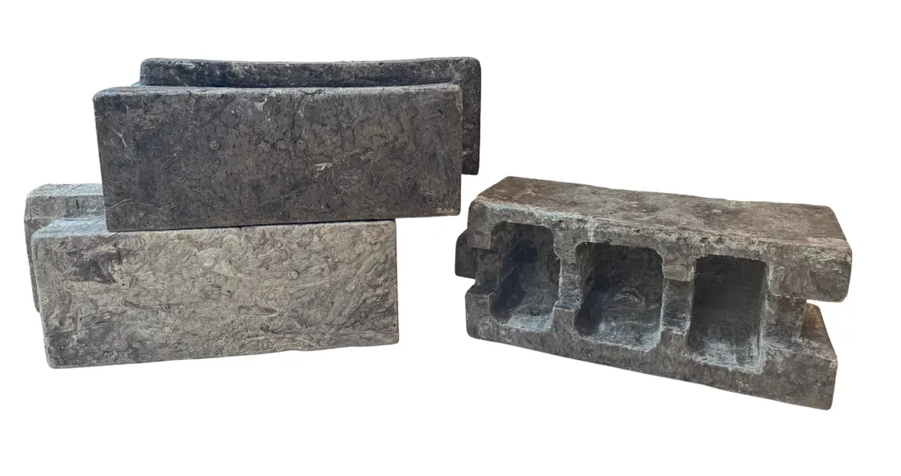
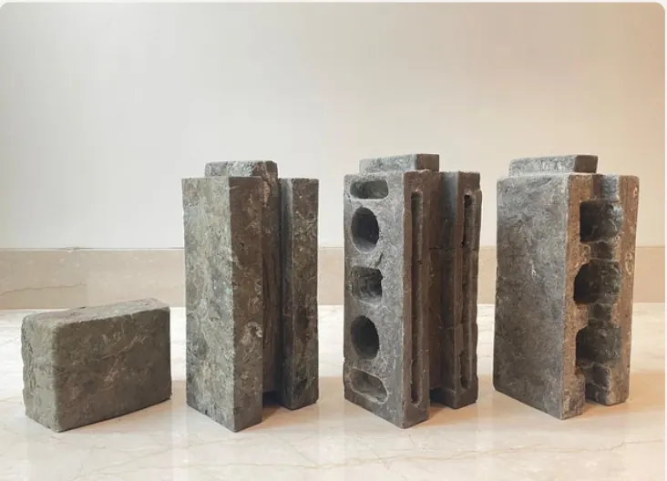
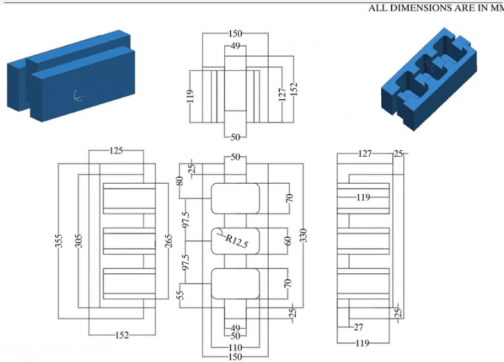
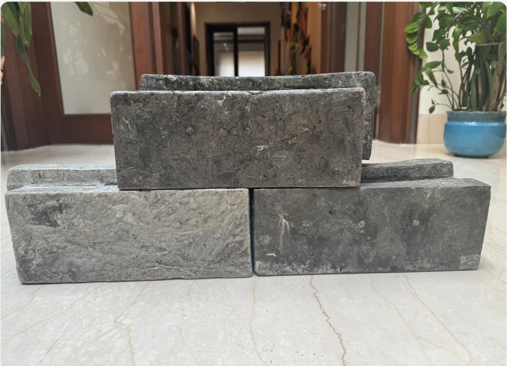
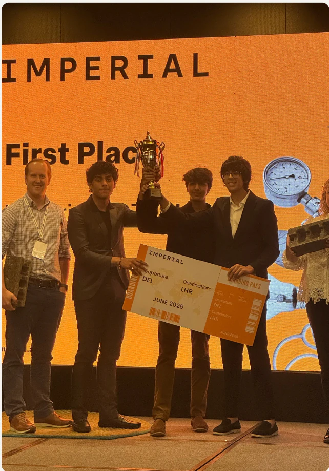
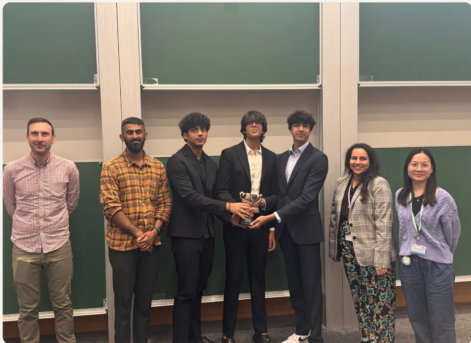

AWARD WON-
Winner at Imperial College London STEM-a-thon
Innovation
Transformed plastic waste into sustainable, affordable and eco-friendly building solutions.
In a three-member team, designed and build bricks with recycled-plastic. Aligned with the UN SDGs goals. Won 1st Prize at International Finals at Imperial College London STEM-a-thon.
The design went through multiple iterations and finally emerged into a hollow, low cost interlocking design that could be used for temporary or emergency housing. We used all types of plastics HDPE, Pet, PP and multilayer plastic. Shredded it, heated it and mixed it with sand and other binding materials. Finally poured it into a compression moulding machine to get the desired shape. Created a business plan and received funding offers to develope the project further

ADVANTAGES
- Creates a circular economy and reduces the plastic waste in the landfills
- Decreases dependency on traditional, energy intensive construction material like clay and concrete
- All types of plastic can be used (even multilayer plastic which does not get otherwise recycled)
- Light weight and interlocking design makes it easy for transportation and installation respectively
- Better Insulation properties
- Quick to install and useful in emergencies.




